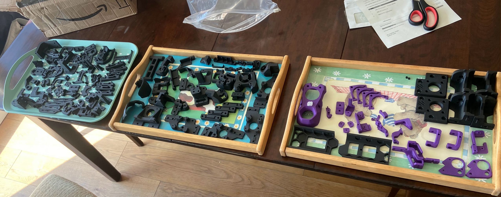
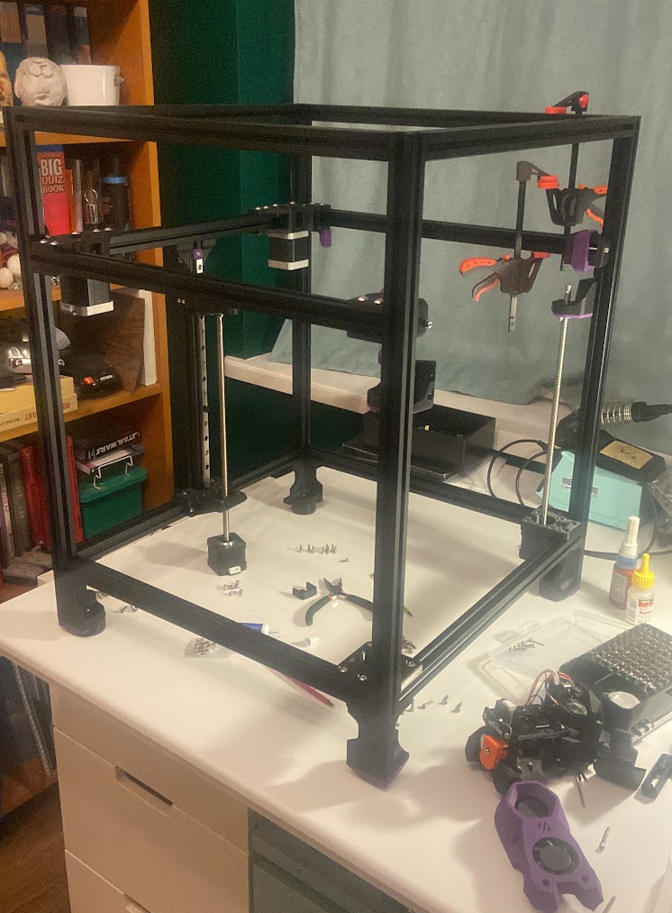
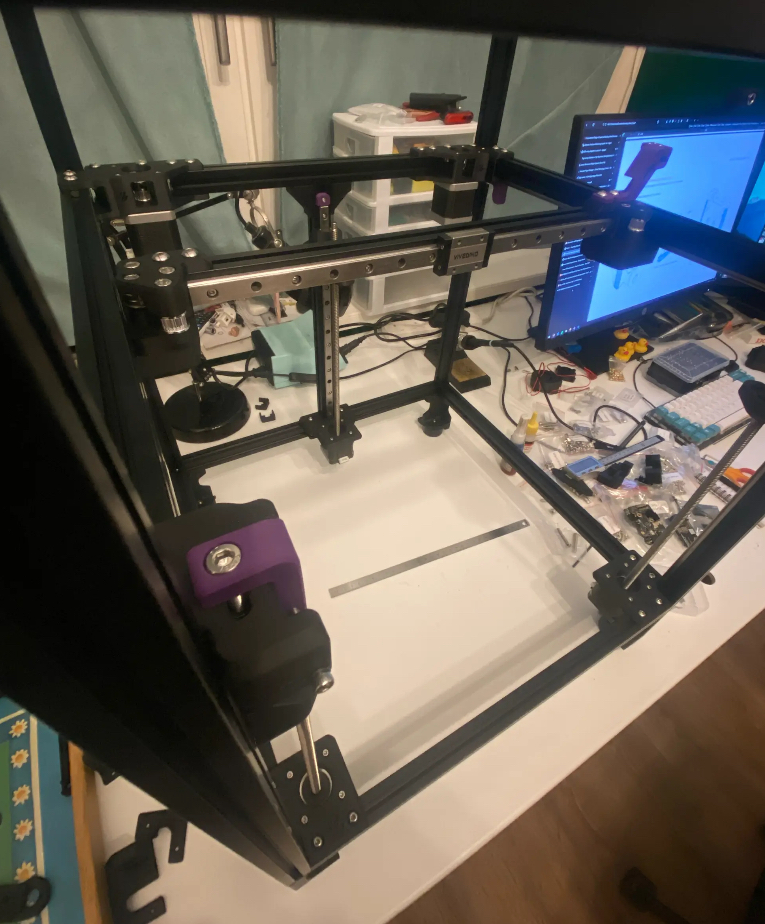
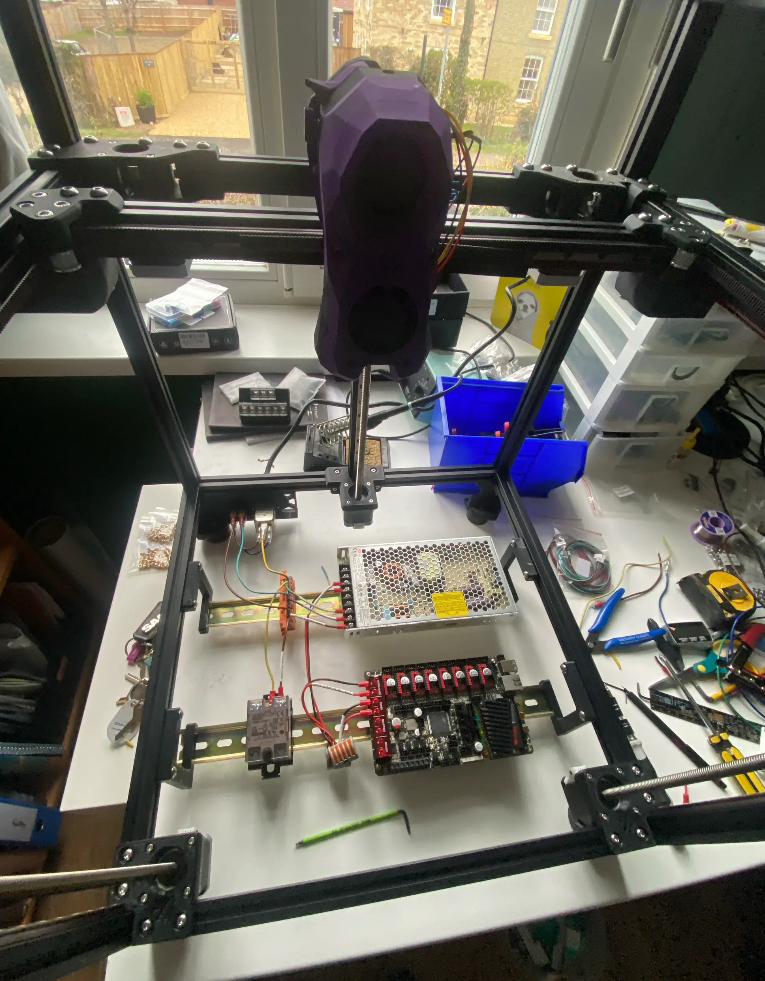
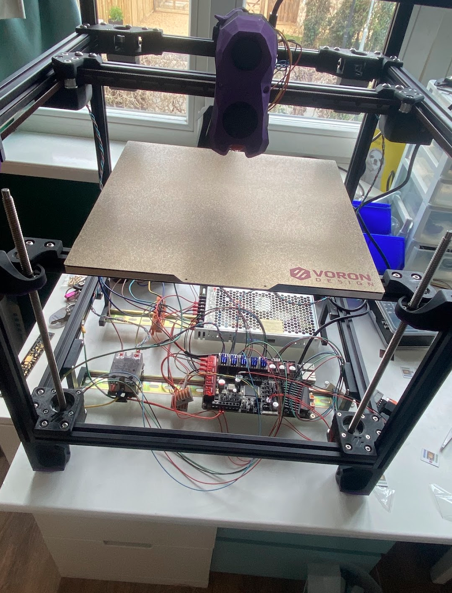
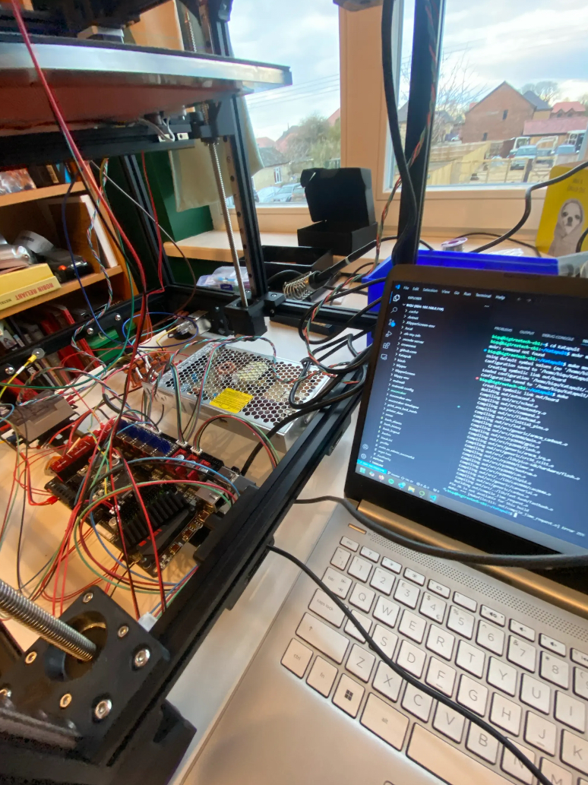
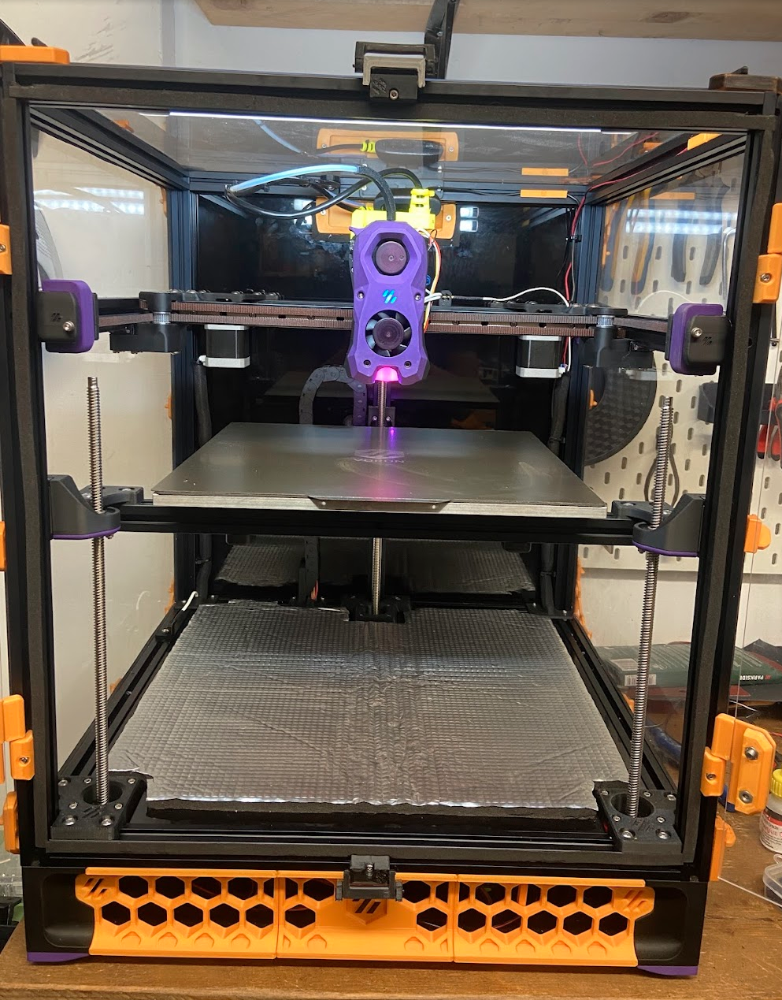

Voron printers are fully open-source 3D printer designs. The printer requires a kit of standard hardware
(leadscrews, linear rails, aluminium extrusions, build plate), generic electronics (power supply, motors, motor drivers),
and a set of 3D printed parts supplied on a not-for-profit basis by volunteers in the community.
The printer is a fully enclosed CoreXY design, with a 300 x 300 x 250mm build volume. The heated chamber allows printing
with a wide range of materials, including ABS, ASA, and even Nylon and PC blends.
The printer is very capable in default configuration, but the real benefit of these printers are the open-source modification projects. Thousands of users have contributed modifications to improve speed, quality, and enhance functionality. The printer can be modified no end, and I'm looking forward to contributing my own projects!
MECHANICAL ASSEMBLY





ELECTRONICS
The Raspberry Pi was flashed with Klipper firmware, power supply connected to the mains, stepper motors connected to the motherboard, bed heater connected to an SSR, and limit switches plugged in, and inductive z-probe configured. Finally the CAN bus was flashed to the toolhead, and the first print could be started! (The wires were tidied after taking the photo)





FINAL TOUCHES
With the printer functional I could print clips to hold enclosure panels, a mount for a webcam (for remote monitoring), and skirts to protect the electronics bay.
The printer has been working great since I built it and gets regular use producing functional parts for the garage, house, car, and other projects.



To Do:
- Input shaping
- Nozzle brush
- Toolhead cooling fan
- Extractor fan
- Calibrate 0.6mm nozzle
- Adaptive bed mesh
- Chamber temperature sensor
- Filament runout sensor
- Internal filament spool holder
- Tramming the gantry
- Tachometer hotend fan
- Better sealing doors